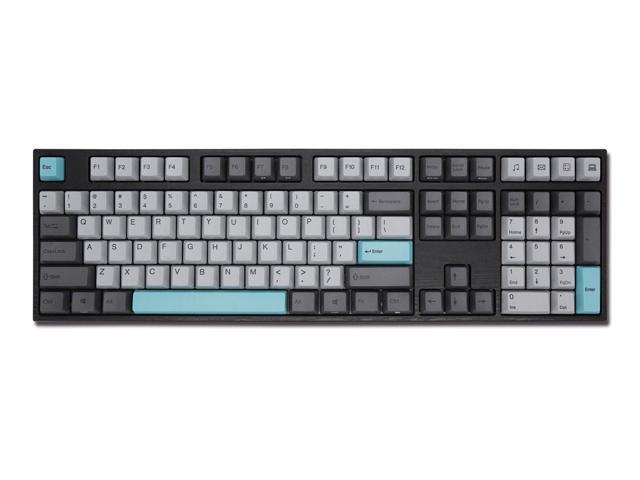
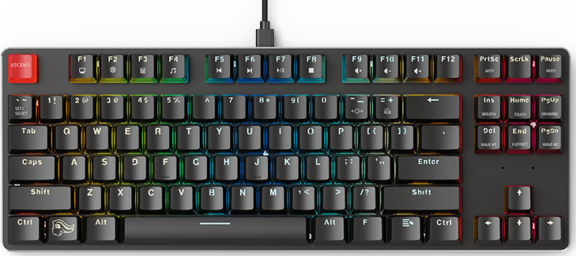
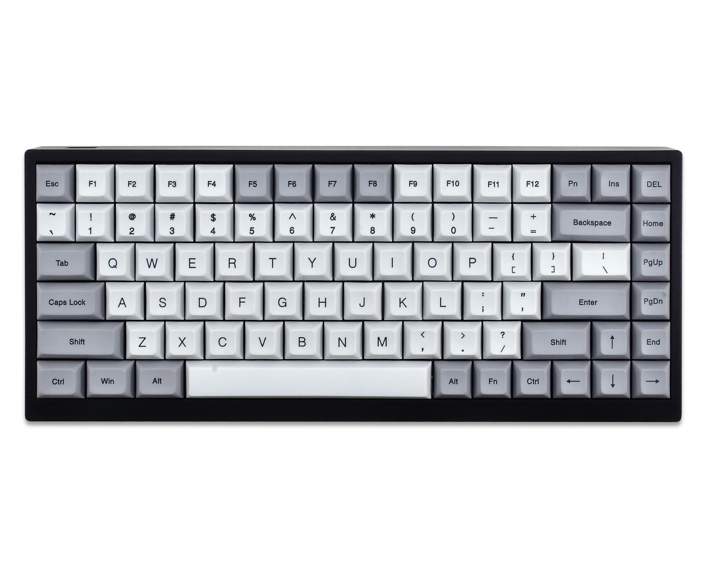
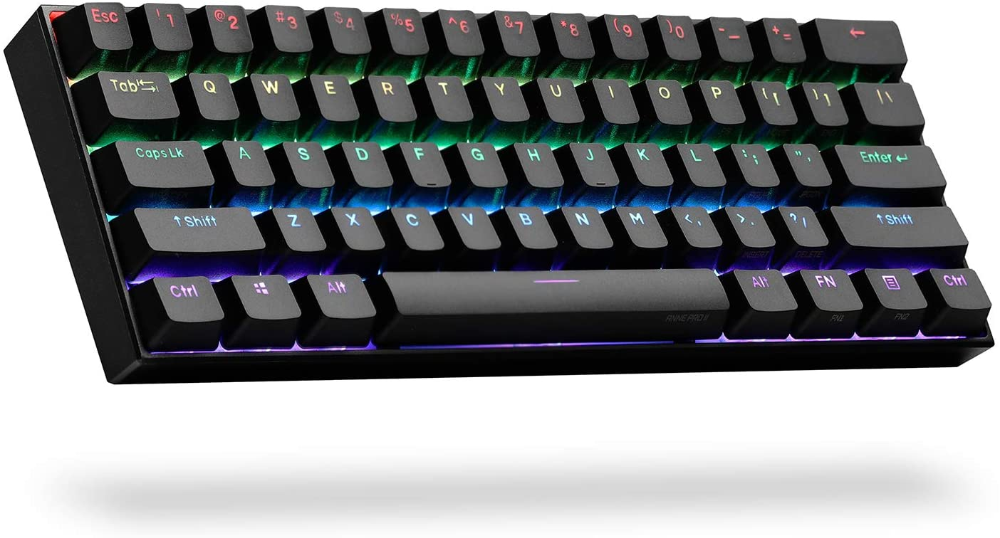
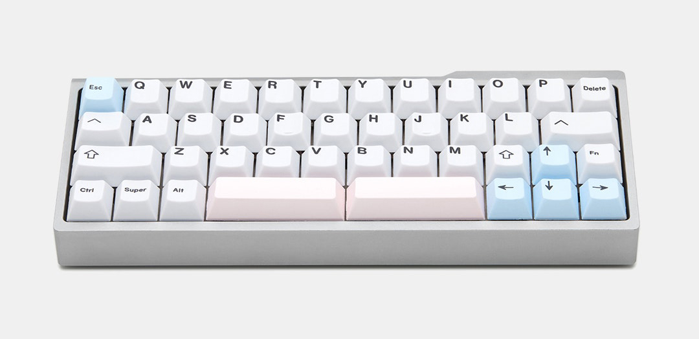

Størrelser av tastaturer
Full størrelse 100%
Perfekt for mange oppføringer Tastaturer i full størrelse er et alternativ for folk som trenger å gjøre mye dataregistrering og krever hyppig bruk av talltastaturet. Tastatur i full størrelse er standard på kontorer og er det folk flest tenker på når de forestiller seg et tastatur. Tastaturene i full størrelse kommer som standard med et talltastatur, hjemmeklynge, funksjonstaster og piltaster. Nummertastaturet er vanligvis plassert til høyre, men noen tastaturer følger med til venstre.
Komfortabel, men klumpete Tastatur i full størrelse er flott for alle som trenger å ha et allsidig utvalg av nøkler til rådighet, enten det er for spill, arbeid eller til og med bare å surfe på internett. De kan tilby mange alternativer for programmerbare taster og er enkle å skrive på, siden ingen av tastene er på et lavere lag, bortsett fra de vanlige.
Noen ganger dyrere Det er viktig å huske på at mekaniske tastaturer i full størrelse kan være litt dyrere enn mindre størrelser fordi de krever mange ekstra brytere og nøkkelord for å fullføre bygningen. Det er kanskje ikke mulig å bygge et tilpasset tastatur i full størrelse på grunn av kostnadene, men det er mulig å finne forhåndsbygde til relativt billig.
Tenkeyless (TKL)
Tenkeyless tastaturer har vanligvis 87 taster, det perfekte oppsettet for å balansere størrelse og funksjonalitet. I motsetning til tastaturer i full størrelse har de ikke et talltastatur som gjør tastaturet mer kompakt og lettere å ta med på farten. De fleste bruker ikke talltastaturet tungt, så de er i stand til å kvitte seg med ekstra bagasje uten at det påvirker skrivingen for mye. Hvis du vil sjekke ut noen flere TKL-tastaturer, følg lenken til dette innlegget. Kompakt og behagelig Et mer kompakt tastatur gir også mer plass på skrivebordet, slik at du mer komfortabelt kan skrive notater i et notisblokk på siden av tastaturet uten å føle deg begrenset av plassmangel. I tillegg vil musen være mye nærmere hånden din når du skriver, så du må reise mye mindre for å nå frem til musen.
Tenkeyless-tastaturer har fremdeles piltastene, hjemmeklyngen og funksjonstastene, så du bør fortsatt kunne spille og skrive komfortabelt. Du vil være i stand til å finne mange forskjellige mekaniske tastaturer som ikke er nøkkelfri til salgs, fordi de fleste tastaturer vanligvis kommer med en kompakt TKL-ekvivalent.
75%
75% tastatur har et interessant design. De er en litt mer kompakt versjon av et holdeløst bord, de plasserer piltastene og hjemmeklyngen rett ved siden av hverandre og retter hjemmeklyngen loddrett for å spare plass. Dette gjør at alt kan pakkes tett og tett. Det er mye mindre 75% tastaturer på markedet, så alternativene dine vil være begrenset. Heldigvis har vi satt sammen våre favoritt tastaturer på 75% slik at du enkelt kan finne dem. Veldig liten justeringsperiode Det kan ta litt tid å venne seg til noen av de merkelige nøkkelstørrelsene og plasseringen. For eksempel er høyre skiftnøkkel vanligvis mye mindre enn vanlig, og det vil ta litt tid å bygge muskelminnet til hvor den nye hjemmeklyngen ligger. Heldigvis brukes ikke disse tastene for ofte, så det bør ikke påvirke å skrive for mye. Hvis du er fan av å kjøpe tilpassede tastaturdeksler, kan det hende du må søke litt ekstra for å finne et sett som fungerer med 75% layout, på grunn av noen av de merkelige nøkkelstørrelsene.
60% tastatur
60% tastatur: veldig populært og lett å finne 60% tastatur er populært i tastaturfellesskapet for spill og mekanisk tastatur. Ikke helt vanlig som TKL eller fullstørrelse, men det er mange forskjellige 60% tastaturer tilgjengelig online. På grunn av sin lille, kompakte og symmetriske form er de den vanligste størrelsen for tilpassede tastaturbygg. Billigere å kjøpe og bygge deg selv På grunn av deres mindre størrelse kan det være relativt billig å kjøpe brytere og nøkkelord for spesiallagde bygg, pluss at det finnes en rekke forskjellige PCB-oppsett og koffertdesign spesielt for 60% tastaturer. Pre-build tastaturer er også ganske billige, du kan finne ganske gode tilbud hvis du er villig til å falle til 60% tastaturstørrelse.
Kan være for liten for noen Et 60% -tastatur kan være utenfor komfortsonen for de fleste, mangel på piltaster, hjemmeklynge, talltastatur og funksjonsrad, kan få skriving til å føles som en helt ny ferdighet å lære. Folk som kjøper og bruker tastatur på 60%, bør vite hva de går inn i før de kjøper. For noen mennesker vil det ikke påvirke skriveopplevelsen for mye, men rettferdig advarsel til de som vil prøve størrelsen.
40% tastaturer
Det minste tastaturet du fremdeles kan skrive på 40% tastaturer er det mest tilgjengelige tastaturet som du fremdeles kan skrive på. På toppen av alt som er fjernet for 60% tastaturer (ingen talltastatur, funksjonsrad, piltaster, hjemmeklynge), blir 40% tastaturer også kvitt alle tallene på øverste rad. Det stemmer, det er ingen tall på dette tastaturoppsettet. I tillegg kvitter du deg med alle ikke-bokstavtastene som semikolon, anførselstegn osv. Lang justeringsperiode Hvis du vil bli dyktig å skrive med et 40% -tastatur, må du venne deg til å skifte lag ofte for å kunne legge inn tall og symboler. Dette vil kreve mye tid å venne seg til, men ved å gjøre dette sparer du mye plass på skrivebordet ditt og har et lett og kompakt tastatur å ta med på farten.
Vanskelig å finne På grunn av hvor rart disse kan være å skrive på, er det ikke veldig stor etterspørsel etter 40% tastatur, så de er ikke tilgjengelige fra de vanlige tastaturprodusentene. I stedet må du kjøpe delene online og montere selv eller finne en gruppe som kjøper online for å få en skreddersydd.